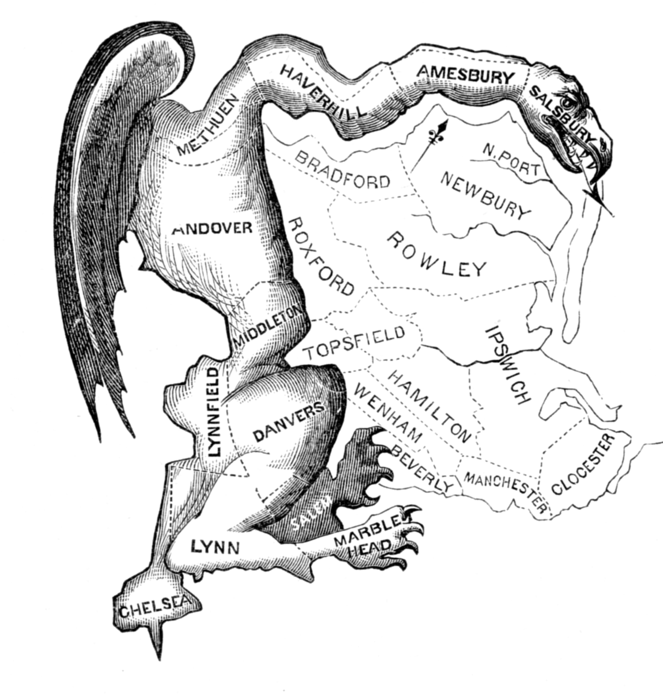

Electoral districts are redrawn after each new Census taken at the end of every decade to reflect changes in population. The drawing of electoral maps is often done by state legislatures, many of which partake in a process known as "gerrymandering."
Gerrymandering is the unfair drawing of electoral districts with the intention of promoting the voice of one segment of the population at the expense of others. Sometimes, it involves long, snaking districts that capture particular groups of voters. At other times, gerrymandered rural districts swoop into cities to dilute urban voters' voices. Either way, gerrymandered maps split up communities and make it more difficult for those communities' interests to be heard in each state's legislature and the halls of Congress.
One of the first documented uses of gerrymandering took place in 1812, when Massachusetts Governor Elbridge Gerry signed into law a new set of electoral districts for the Massachusetts Senate that linked together scattered pockets of supporters of the Democratic-Republican Party.
One of the winding districts was said to resemble a mythological salamander, earning this kind of districting the moniker "Gerrymander."
In the 20th century, gerrymandering was used in tandem with voter suppression tactics in the Jim Crow South to silence the voices of minority voters and others with viewpoints those in power considered "unfavorable." To combat this, the Voting Rights Act of 1965 included a provision requiring certain jurisdictions to seek preclearance with federal officials regarding their electoral district boundaries.
In 2010, the Republicans had a very favorable election, giving them full control over the drawing of 213 out of 435 congressional districts. The effects were immediate: in 2012, despite the Democrats garnering 1.4 million more votes than Republicans, they only won 201 seats, compared to the Republicans' 234 seats.
Democrat-controlled states created similarly effective gerrymanders. In Maryland, Democrats redrew the state's Congressional map to contain seven Democratic-leaning seats and just a single Republican-leaning seat.
Either way, gerrymandering sharply reduces the number of districts that could hold a competitive election, which makes election results almost predetermined. And because the public would no longer be able to hold politicians accountable, elected politicians have less incentive to be responsive to their voters. This leads to more political fighting and less work done on behalf of the people.
States such as Colorado and Virginia have created citizens' redistricting commissions, which are independent of partisan state legislatures. Similar reforms have been passed through state legislatures, while others were passed by popular referendums.
Unfortunately, not every reform works. For example, despite an anti-gerrymandering referendum passing in Ohio, its Congressional districts are still highly gerrymandered: in a state where Democrats attain 46% of the vote on average, they can win 33% of its Congressional seats in a good year... and just 13% of its Congressional seats in a bad year.
Lawsuits against states with gerrymandered Congressional and state legislature maps are another method used to fight gerrymandering. Such lawsuits tend to focus on violations of the Voting Rights Act and unfairly partisan outcomes in elections, which they prove by using a computer to generate a large ensemble of maps. This website aims to provide an inside look at this process by showcasing metrics commonly used in court, as well as a few original ones that evaluate partisan fairness.